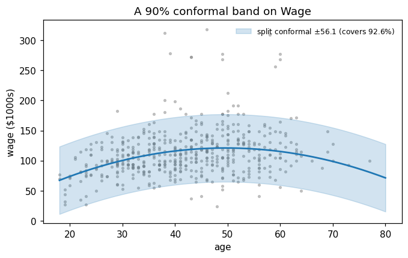
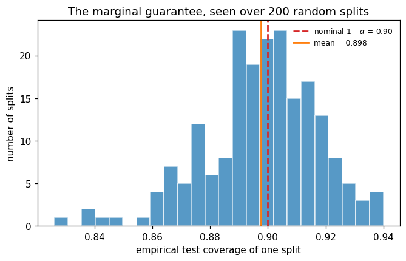
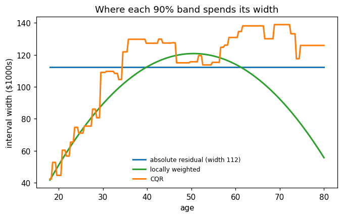

This notebook runs on Colab as-is. The badge link above and the GITHUB_RAW line in the setup cell already point to this repository, so everything installs and loads automatically.
Advanced Module A3 — Conformal Prediction¶
Lab: split conformal on Wage, coverage over splits, adaptive intervals (CQR), prediction sets, the OLS stress test¶
Course: Quantitative Research Methods Instructor: Prof. Dr. Christoph Weisser Source: James, Witten, Hastie, Tibshirani & Taylor (2023), An Introduction to Statistical Learning, with Applications in Python, Springer. Companion code at statlearning.com. This advanced module extends the book with distribution-free prediction intervals (Vovk et al. 2005; Lei et al. 2018; Romano et al. 2019).
Goal. Build a split-conformal 90% interval on Wage in ten lines and check its coverage; watch the marginal guarantee hold over 200 repeated splits; make the interval width adaptive with locally weighted scores and conformalized quantile regression; turn softmax probabilities into prediction sets for a 3-class problem; and stress-test Chapter 3’s OLS prediction interval against conformal under heteroskedastic truth.
Setup¶
Run this cell once. The ISLP package can be installed with pip install ISLP. As an alternative, the same data sets are available as CSVs in the workspace’s ALL CSV FILES - 2nd Edition folder.
Google Colab: this notebook also runs on Colab out of the box — the setup cell below installs any missing packages and downloads the data automatically.
# --- Setup: runs locally AND on Google Colab --------------------------------
# Silence only the spurious 'encountered in matmul' RuntimeWarnings that the macOS
# Accelerate BLAS emits; real warnings (deprecations, model caveats) stay visible.
import warnings
warnings.filterwarnings('ignore', message='.*encountered in matmul', category=RuntimeWarning)
import importlib.util, os, subprocess, sys
IN_COLAB = 'google.colab' in sys.modules
def _ensure(pkg, import_name=None):
"""pip-install pkg (quietly) if its import is missing."""
if importlib.util.find_spec(import_name or pkg) is None:
subprocess.run([sys.executable, '-m', 'pip', 'install', '-q', pkg], check=False)
if IN_COLAB: # Colab ships numpy/pandas/sklearn/statsmodels; add course extras
for _pkg, _imp in [('ISLP', 'ISLP')]:
_ensure(_pkg, _imp)
import numpy as np
import pandas as pd
import matplotlib.pyplot as plt
rng = np.random.default_rng(2024)
plt.rcParams['figure.dpi'] = 110
try:
from ISLP import load_data
HAVE_ISLP = True
except ImportError:
HAVE_ISLP = False
print('ISLP not installed; using CSV / URL fallbacks.')
# Local CSV location (repo layout first, then legacy paths, then a data/ cache).
_CANDIDATES = ['../ALL CSV FILES - 2nd Edition',
'ALL CSV FILES - 2nd Edition',
'../../ALL CSV FILES - 2nd Edition',
'../../../ALL CSV FILES - 2nd Edition', 'data']
CSV = next((p for p in _CANDIDATES if os.path.isdir(p)), 'data')
# GITHUB_RAW lets a fresh Colab runtime fetch any
# CSV that is neither in ISLP nor already local (spaces in the folder -> %20).
GITHUB_RAW = ('https://raw.githubusercontent.com/ChrisW09/Quantitative-Research-Methods/main/'
'ALL%20CSV%20FILES%20-%202nd%20Edition')
# The four datasets NOT in the ISLP package -> load from the book's official
# site so the notebook works on a fresh Colab even before the repo is published.
KNOWN_URLS = {
'Advertising': 'https://www.statlearning.com/s/Advertising.csv',
'Heart': 'https://www.statlearning.com/s/Heart.csv',
'Income1': 'https://www.statlearning.com/s/Income1.csv',
'Income2': 'https://www.statlearning.com/s/Income2.csv',
}
def load(name, **read_csv_kwargs):
"""Load a course dataset. Order: ISLP package -> R datasets -> local CSV
-> official book URL -> your GitHub repo. Works locally and on Colab."""
if HAVE_ISLP:
try:
return load_data(name)
except Exception:
pass
if name == 'USArrests': # classic R dataset, not in ISLP
try:
import statsmodels.api as sm
return sm.datasets.get_rdataset('USArrests', 'datasets').data
except Exception:
pass
path = f'{CSV}/{name}.csv'
if os.path.exists(path): # running from the repo (local)
return pd.read_csv(path, **read_csv_kwargs)
remotes = ([KNOWN_URLS[name]] if name in KNOWN_URLS else []) + [f'{GITHUB_RAW}/{name}.csv']
for url in remotes: # fresh Colab: stream over https
try:
return pd.read_csv(url, **read_csv_kwargs)
except Exception:
continue
raise FileNotFoundError(
f"Could not load {name!r}. Put the CSV in '{CSV}/' or check your connection for the GITHUB_RAW fallback.")
ISLP not installed; using CSV / URL fallbacks.
1. Split conformal on Wage¶
The whole recipe: fit on the training set only; compute absolute residuals on a held-out calibration set; take the \(k\)-th smallest with \(k = \lceil (n+1)(1-\alpha)\rceil\) — the finite-sample correction that makes the guarantee exact; report \(\hat f(x) \pm \hat q\). With \(n = 500\), \(\alpha = 0.1\): \(k = \lceil 501 \times 0.9 \rceil = 451\), the \(0.902\) quantile — slightly above the naive \(0.9\) quantile.
from sklearn.linear_model import LinearRegression
Wage = load('Wage')
x, y_w = Wage['age'].to_numpy(float), Wage['wage'].to_numpy()
rng = np.random.default_rng(2024) # reproducible split
i = rng.permutation(len(y_w))
tr, ca, te = i[:2000], i[2000:2500], i[2500:] # 2000 / 500 / 500
P = lambda a: np.column_stack([a, a**2]) # quadratic in age
f = LinearRegression().fit(P(x[tr]), y_w[tr]) # 1. fit on TRAIN only
s = np.abs(y_w[ca] - f.predict(P(x[ca]))) # 2. calibration scores
k = int(np.ceil((len(ca) + 1) * (1 - 0.1))) # 3. k = ceil((n+1)(1-alpha))
qhat = np.sort(s)[k - 1] # k-th smallest score
res_te = np.abs(y_w[te] - f.predict(P(x[te])))
cov = (res_te <= qhat).mean() # 4. check on the test set
print(f'k = {k}, qhat = {qhat:.2f}, test coverage = {cov:.3f}')
# The textbook alternative: a Gaussian band from the training residual sd.
sig_tr = (y_w[tr] - f.predict(P(x[tr]))).std()
print(f'Gaussian band +-{1.645*sig_tr:.1f} covers {(res_te <= 1.645*sig_tr).mean():.3f} (claiming 0.90)')
k = 451, qhat = 56.14, test coverage = 0.926
Gaussian band +-66.1 covers 0.952 (claiming 0.90)
Reading the output. The 451st of 500 sorted calibration residuals gives \(\hat q = 56.14\); the band \(\hat f(\text{age}) \pm 56.1\) covers \(92.6\%\) of the 500 test wages. The Gaussian band (\(\pm 66.1\)) claims 90% but delivers 95.2% — miscalibrated, because wages are right-skewed, not Gaussian. Conformal needed no distributional assumption: only exchangeability and a clean split.
# Marginal is not conditional: same interval, different subgroups.
young, old = x[te] < 30, x[te] >= 60
print(f'coverage under-30s: {(res_te[young] <= qhat).mean():.3f} (n = {young.sum()})')
print(f'coverage 60-plus: {(res_te[old] <= qhat).mean():.3f} (n = {old.sum()})')
fig, ax = plt.subplots(figsize=(7, 4))
grid = np.linspace(18, 80, 200)
fhat = f.predict(P(grid))
ax.scatter(x[te], y_w[te], s=6, alpha=0.4, color='grey')
ax.fill_between(grid, fhat - qhat, fhat + qhat, alpha=0.2, color='C0',
label=fr'split conformal $\pm${qhat:.1f} (covers {cov:.1%})')
ax.plot(grid, fhat, color='C0', lw=1.8)
ax.set(xlabel='age', ylabel='wage ($1000s)', title='A 90% conformal band on Wage')
ax.legend(frameon=False, fontsize=8)
plt.show()
coverage under-30s: 0.986 (n = 74)
coverage 60-plus: 0.829 (n = 35)

Reading the output. The guarantee is marginal: \(98.6\%\) coverage for under-30s, \(82.9\%\) for the 60-plus group, \(92.6\%\) on average. A constant-width band overcovers where wages are predictable and undercovers where they spread out. If a subgroup matters, calibrate on that subgroup (Mondrian conformal) or use adaptive scores — Section 3.
2. Coverage over repeated splits¶
What “\(P(Y \in C(X)) \ge 0.9\)” actually promises: an average over calibration draws and test points. Any single split can land at \(0.87\) — nothing is wrong when it does. 200 random splits make the point.
rng2 = np.random.default_rng(2024)
covs = []
for _ in range(200):
p = rng2.permutation(len(Wage))
tr2, ca2, te2 = p[:2000], p[2000:2500], p[2500:]
m = LinearRegression().fit(P(x[tr2]), y_w[tr2])
q = np.sort(np.abs(y_w[ca2] - m.predict(P(x[ca2]))))[k - 1]
covs.append((np.abs(y_w[te2] - m.predict(P(x[te2]))) <= q).mean())
covs = np.array(covs)
print(f'coverage over 200 splits: mean {covs.mean():.4f} sd {covs.std():.4f}'
f' min {covs.min():.3f} max {covs.max():.3f}')
fig, ax = plt.subplots(figsize=(7, 4))
ax.hist(covs, bins=24, color='C0', alpha=0.75, edgecolor='white')
ax.axvline(0.90, color='C3', ls='--', lw=1.8, label=r'nominal $1-\alpha$ = 0.90')
ax.axvline(covs.mean(), color='C1', lw=1.8, label=f'mean = {covs.mean():.3f}')
ax.set(xlabel='empirical test coverage of one split', ylabel='number of splits',
title='The marginal guarantee, seen over 200 random splits')
ax.legend(frameon=False, fontsize=8)
plt.show()
coverage over 200 splits: mean 0.8976 sd 0.0198 min 0.826 max 0.940

Reading the output. Per-split coverage fluctuates between \(0.826\) and \(0.940\) (sd \(\approx 0.02\)), but the mean is \(0.898 \approx 0.9\) — the guarantee in action. The deck’s appendix derives the exact law of this fluctuation (a Beta distribution); with \(n = 500\) calibration points its sd is \(\approx 1.3\%\), which is why \(n\) between 500 and 1000 is the usual sweet spot.
3. Adaptive intervals¶
One width for everyone is a blunt instrument. Two repairs, same calibration machinery:
locally weighted: scale the score by a fitted spread model, \(s_i = |y_i - \hat f(x_i)| / \hat\sigma(x_i)\);
CQR (conformalized quantile regression): fit quantile regressions \(\hat q_{0.05}, \hat q_{0.95}\), score \(s_i = \max(\hat q_{lo}(x_i) - y_i,\; y_i - \hat q_{hi}(x_i))\), and shift both ends by the conformal \(\hat q\).
from sklearn.ensemble import GradientBoostingRegressor
# Locally weighted: spread model = mean absolute residual, quadratic in age.
mad = LinearRegression().fit(P(x[tr]), np.abs(y_w[tr] - f.predict(P(x[tr]))))
sig_cal = np.clip(mad.predict(P(x[ca])), 1e-6, None)
q_lw = np.sort(s / sig_cal)[k - 1] # scores in sigma-units
# CQR: gradient boosting at the 5% and 95% quantiles.
X1 = x.reshape(-1, 1)
gb = dict(n_estimators=200, max_depth=2, learning_rate=0.05, random_state=0)
lo = GradientBoostingRegressor(loss='quantile', alpha=0.05, **gb).fit(X1[tr], y_w[tr])
hi = GradientBoostingRegressor(loss='quantile', alpha=0.95, **gb).fit(X1[tr], y_w[tr])
s_cqr = np.maximum(lo.predict(X1[ca]) - y_w[ca], y_w[ca] - hi.predict(X1[ca]))
q_cqr = np.sort(s_cqr)[k - 1]
L, U = lo.predict(X1[te]) - q_cqr, hi.predict(X1[te]) + q_cqr
cov_cqr = ((y_w[te] >= L) & (y_w[te] <= U)).mean()
print(f'q_lw = {q_lw:.3f} (sigma-units), q_cqr = {q_cqr:.2f}, CQR test coverage = {cov_cqr:.3f}')
width = U - L; a_te = x[te]
for label, mask in [('age < 30 ', a_te < 30), ('age 30-59', (a_te >= 30) & (a_te < 60)),
('age >= 60', a_te >= 60)]:
print(f'avg width {label}: CQR {width[mask].mean():6.1f} constant {2*qhat:6.1f}')
q_lw = 1.897 (sigma-units), q_cqr = 0.66, CQR test coverage = 0.896
avg width age < 30 : CQR 70.5 constant 112.3
avg width age 30-59: CQR 120.4 constant 112.3
avg width age >= 60: CQR 134.9 constant 112.3
fig, ax = plt.subplots(figsize=(7, 4))
gsig = np.clip(mad.predict(P(grid)), 1e-6, None)
ax.plot(grid, np.full_like(grid, 2*qhat), color='C0', lw=2, label=f'absolute residual (width {2*qhat:.0f})')
ax.plot(grid, 2*q_lw*gsig, color='C2', lw=2, label='locally weighted')
ax.plot(grid, hi.predict(grid.reshape(-1, 1)) + q_cqr - (lo.predict(grid.reshape(-1, 1)) - q_cqr),
color='C1', lw=2, label='CQR')
ax.set(xlabel='age', ylabel='interval width ($1000s)',
title='Where each 90% band spends its width')
ax.legend(frameon=False, fontsize=8)
plt.show()

Reading the output. All three cover \(\approx 90\%\) marginally (CQR: \(89.6\%\)), but CQR spends its width where the data spread: average width \(70.5\) for under-30s against \(134.9\) for 60-plus, where the constant band pays \(112.3\) everywhere. Note the locally weighted curve falls after age 60 — its quadratic \(\hat\sigma\) extrapolates poorly: the allocation is only as good as the scale model, even though marginal coverage is untouched.
4. Conformal classification¶
For classification the interval becomes a set of labels: score \(s_i = 1 - \hat p_{y_i}(x_i)\) on the calibration set, then include in \(C(x)\) every class whose predicted probability is at least \(1 - \hat q\). The set size is a per-point difficulty meter that the accuracy number hides.
from sklearn.linear_model import LogisticRegression
rng = np.random.default_rng(2024)
mu = np.array([[0, 0], [2.2, 0], [1.1, 1.9]]) # class centres
Xc = np.vstack([rng.normal(m, 1.0, (1000, 2)) for m in mu])
yc = np.repeat([0, 1, 2], 1000)
p = rng.permutation(3000); Xc, yc = Xc[p], yc[p] # shuffle once
TRc, CAc, TEc = np.arange(1500), np.arange(1500, 2250), np.arange(2250, 3000)
clf = LogisticRegression(max_iter=1000).fit(Xc[TRc], yc[TRc])
print(f'test accuracy of the point classifier: {(clf.predict(Xc[TEc]) == yc[TEc]).mean():.3f}')
pc = clf.predict_proba(Xc[CAc])
s_cls = 1 - pc[np.arange(750), yc[CAc]] # 1 - p_true on calibration
k_cls = int(np.ceil(751 * 0.9)) # k = 676
qhat_cls = np.sort(s_cls)[k_cls - 1]
sets = clf.predict_proba(Xc[TEc]) >= 1 - qhat_cls
cov_cls = sets[np.arange(750), yc[TEc]].mean()
sizes = sets.sum(axis=1)
print(f'k = {k_cls}, qhat = {qhat_cls:.4f}, coverage = {cov_cls:.4f}, avg set size = {sizes.mean():.3f}')
print(f'set sizes: singletons {np.mean(sizes == 1):.1%}, pairs {np.mean(sizes == 2):.1%},'
f' full {np.mean(sizes == 3):.1%}, empty {np.mean(sizes == 0):.1%}')
test accuracy of the point classifier: 0.809
k = 676, qhat = 0.7685, coverage = 0.9013, avg set size = 1.296
set sizes: singletons 71.3%, pairs 27.7%, full 0.9%, empty 0.0%
Reading the output. Logistic accuracy is \(80.9\%\), yet the sets cover \(90.1\%\) — by saying more than one label exactly where the classes overlap: \(71\%\) singletons near the centres, \(28\%\) pairs at the boundaries. The price of certainty: demanding \(99\%\) coverage (\(\alpha = 0.01\), \(k = 744\), \(\hat q = 0.9638\)) inflates the average set to \(2.17\) of 3 classes. Pick \(\alpha\) by what a large set costs downstream — a manual review, a second lab test.
5. OLS prediction interval vs conformal¶
Chapter 3’s interval is exact at every \(x\) — if the linear-Gaussian-homoskedastic model is true. First the friendly case, where they should agree; the full heteroskedastic stress test is worked as Extended Exercise A3.2 below.
import statsmodels.api as sm
rng = np.random.default_rng(2024)
N = 4000
xs = rng.uniform(0, 10, N)
ys = 1 + 2*xs + rng.normal(0, 2, N) # homoskedastic truth, sigma = 2
tr3, ca3, te3 = np.arange(2000), np.arange(2000, 3000), np.arange(3000, 4000)
ols = sm.OLS(ys[tr3], sm.add_constant(xs[tr3])).fit()
half_ols = 1.645 * np.sqrt(ols.scale) # theory: 1.645 x 2 = 3.29
pred = ols.params[0] + ols.params[1] * xs[te3]
k3 = int(np.ceil(1001 * 0.9))
q3 = np.sort(np.abs(ys[ca3] - (ols.params[0] + ols.params[1]*xs[ca3])))[k3 - 1]
print(f'OLS PI half-width {half_ols:.2f} coverage {(np.abs(ys[te3]-pred) <= half_ols).mean():.3f}')
print(f'split conformal half-width {q3:.2f} coverage {(np.abs(ys[te3]-pred) <= q3).mean():.3f}')
OLS PI half-width 3.31 coverage 0.915
split conformal half-width 3.24 coverage 0.909
Reading the output. When the Gaussian linear model is true, conformal costs essentially nothing: both intervals reproduce the theoretical \(\pm 3.29\) (\(3.31\) vs \(3.24\)) and both cover \(\approx 90\%\). Conformal is not a better interval — it is the same interval with a weaker warranty requirement. Validation teams run both: if they disagree materially, the model assumptions are the prime suspect.
Lecture exercises — worked Python solutions¶
These are the [Python]-tagged exercises from the lecture slides, solved step by step; run them cell by cell and compare with the slide solutions. Data loads through the load() helper defined in the Setup cell, so every cell works locally and on Colab.
Extended Exercise A3.1 — CQR on Wage, end to end [Python]¶
Task (from the slides). Reproduce the adaptive band using the deck’s split of Wage (seed 2024; \(2000/500/500\)):
fit
GradientBoostingRegressor(loss="quantile")at levels \(0.05\) and \(0.95\) on the training set (200 trees, depth 2, learning rate 0.05,random_state=0);compute the CQR scores on the calibration set and \(\hat q\) at \(\alpha = 0.1\); report test coverage;
compare average interval width for ages \(<30\), \(30\)–\(59\) and \(\ge 60\) against the constant-width band (\(112.3\));
compare the two bands’ subgroup coverage for under-30s and 60-plus — which failure does CQR repair, and what does it not guarantee?
# (1)-(2): the models and scores were fitted in Section 3 — recompute explicitly.
s_cqr = np.maximum(lo.predict(X1[ca]) - y_w[ca], y_w[ca] - hi.predict(X1[ca])) # CQR score
k = int(np.ceil((len(ca) + 1) * 0.9)) # k = 451
qhat_cqr = np.sort(s_cqr)[k - 1] # tiny correction
L, U = lo.predict(X1[te]) - qhat_cqr, hi.predict(X1[te]) + qhat_cqr
print(round(qhat_cqr, 2), ((y_w[te] >= L) & (y_w[te] <= U)).mean()) # Expected: 0.66 0.896
# (3) --------------------------------------------------------------------
width = U - L
for label, mask in [('age < 30 ', a_te < 30), ('age 30-59', (a_te >= 30) & (a_te < 60)),
('age >= 60', a_te >= 60)]:
print(f'{label}: CQR width {width[mask].mean():6.1f} constant {2*qhat:6.1f}')
# (4) --------------------------------------------------------------------
in_cqr = (y_w[te] >= L) & (y_w[te] <= U)
in_const = res_te <= qhat
for label, mask in [('under-30', a_te < 30), ('60-plus ', a_te >= 60)]:
print(f'{label}: constant {in_const[mask].mean():.3f} CQR {in_cqr[mask].mean():.3f}')
0.66 0.896
age < 30 : CQR width 70.5 constant 112.3
age 30-59: CQR width 120.4 constant 112.3
age >= 60: CQR width 134.9 constant 112.3
under-30: constant 0.986 CQR 0.797
60-plus : constant 0.829 CQR 0.886
Reading the output. \(\hat q = 0.66\) — a tiny correction, because the quantile model already spans \(\approx 90\%\) — and test coverage \(0.896\). CQR repairs the width misallocation: it stops wasting 40 units of width on the young (\(70.5\) vs \(112.3\)) and reinvests them in the old, whose coverage rises from \(0.829\) to \(0.886\). What it does not guarantee: exact per-group coverage — the young bin (\(n = 74\)) lands at \(0.797\), within sampling noise of \(0.9\) but not pinned to it. Only the marginal \(90\%\) is guaranteed; per-group guarantees need per-group calibration. And the slide’s warning stands: fit the quantile models on training data only — refitting on calibration data voids the guarantee.
Extended Exercise A3.2 — Stress-testing the two intervals [Integrative]¶
Task (from the slides). Simulate \(y = 1 + 2x + x\,\varepsilon\), \(\varepsilon \sim \mathcal N(0,1)\), \(x \sim U(0,10)\), \(n = 4000\) (split \(2000/1000/1000\), seed 2024):
fit OLS; build the 90% prediction interval \(\hat y \pm 1.645\,\hat\sigma\); measure test coverage overall, for \(x<2\), and for \(x>8\);
build the split-conformal interval (absolute residuals, \(\alpha = 0.1\)) and measure the same three coverages — what does conformal fix, and what not?
fit a 500-tree
GradientBoostingRegressor; report coverage of \(\hat f \pm 1.645 \times \text{sd(training residuals)}\), then conformalise the same model — explain the gap;which failure modes does split conformal repair marginally, and which needs CQR?
rng = np.random.default_rng(2024)
N = 4000
xh = rng.uniform(0, 10, N)
yh = 1 + 2*xh + xh*rng.normal(0, 1, N) # noise GROWS with x
tr4, ca4, te4 = np.arange(2000), np.arange(2000, 3000), np.arange(3000, 4000)
cov3 = lambda hit: [round(float(hit.mean()), 3), round(float(hit[xh[te4] < 2].mean()), 3),
round(float(hit[xh[te4] > 8].mean()), 3)]
# (1) OLS with a pooled sigma ---------------------------------------------
ols = sm.OLS(yh[tr4], sm.add_constant(xh[tr4])).fit()
half = 1.645 * np.sqrt(ols.scale)
pred = ols.params[0] + ols.params[1] * xh[te4]
print(f'(1) pooled sigma {np.sqrt(ols.scale):.2f} [overall, x<2, x>8] =',
cov3(np.abs(yh[te4] - pred) <= half))
# (2) conformalise the same OLS model -------------------------------------
kx = int(np.ceil(1001 * 0.9)) # k = 901
q = np.sort(np.abs(yh[ca4] - (ols.params[0] + ols.params[1]*xh[ca4])))[kx - 1]
print(f'(2) conformal qhat {q:.2f} [overall, x<2, x>8] =',
cov3(np.abs(yh[te4] - pred) <= q))
# (3) flexible model, optimistic plug-in sigma vs conformal ----------------
g = GradientBoostingRegressor(n_estimators=500, random_state=0).fit(xh[tr4, None], yh[tr4])
sig_tr4 = np.std(yh[tr4] - g.predict(xh[tr4, None]))
print(f'(3) GBR training-residual sd {sig_tr4:.2f} (held-out sd {np.std(yh[te4] - g.predict(xh[te4, None])):.2f})')
print(f' plug-in [overall, x<2, x>8] =', cov3(np.abs(yh[te4] - g.predict(xh[te4, None])) <= 1.645*sig_tr4))
qg = np.sort(np.abs(yh[ca4] - g.predict(xh[ca4, None])))[kx - 1]
print(f' conformal (qhat {qg:.2f}) =', cov3(np.abs(yh[te4] - g.predict(xh[te4, None])) <= qg))
(1) pooled sigma 5.87 [overall, x<2, x>8] = [0.906, 1.0, 0.735]
(2) conformal qhat 9.79 [overall, x<2, x>8] = [0.908, 1.0, 0.741]
(3) GBR training-residual sd 3.92 (held-out sd 6.12)
plug-in [overall, x<2, x>8] = [0.776, 1.0, 0.46]
conformal (qhat 10.81) = [0.907, 1.0, 0.709]
Reading the output.
OLS: marginal \(0.906\), but \(100\%\) for \(x<2\) and \(73.5\%\) for \(x>8\) — the pooled \(\hat\sigma = 5.87\) is one compromise width for noise that ranges from \(\approx 0\) to \(10\).
Conformal (\(\hat q = 9.79\)): marginal \(0.908\), subgroups \(1.00 / 0.741\) — conformal guarantees the marginal number, but a constant-width score cannot repair the conditional imbalance; that is CQR’s job.
The plug-in GBR claims 90% and delivers \(77.6\%\): the training-residual sd (\(3.92\)) understates the held-out error sd (\(6.12\)) because 500 trees partly memorised the training noise. Conformalising the same model restores \(90.7\%\) by pricing the width on unseen data (\(\hat q = 10.81\)).
Marginal repairs come free — skew, heteroskedasticity and optimism are all handled; conditional honesty across \(x\) is the one thing that needs an adaptive score. And do not conclude that conformal “failed” in part 2: expecting per-region coverage from a constant-width score is a specification error, not a method error.
Exercise A3.5 — Conformal classification from scratch [Python]¶
Task (from the slides). Build prediction sets for the deck’s 3-class simulation (three Gaussian classes, 1000 points each, centres \((0,0)\), \((2.2,0)\), \((1.1,1.9)\), unit variance, seed 2024; split \(1500/750/750\)):
fit
LogisticRegressionon the training set;compute the calibration scores \(s_i = 1 - \hat p_{y_i}(x_i)\) and \(\hat q\) at \(\alpha = 0.1\) (which \(k\)?);
build the test-set prediction sets; report coverage, average set size and the share of singletons;
re-run with \(\alpha = 0.01\) — what happens to the average set size?
# (1)-(3): the pipeline of Section 4, condensed to the slide's ten lines.
rng = np.random.default_rng(2024)
mu = np.array([[0, 0], [2.2, 0], [1.1, 1.9]]) # class centres
Xs_ = np.vstack([rng.normal(m, 1.0, (1000, 2)) for m in mu])
ys_ = np.repeat([0, 1, 2], 1000)
p = rng.permutation(3000); Xs_, ys_ = Xs_[p], ys_[p]
clf = LogisticRegression(max_iter=1000).fit(Xs_[:1500], ys_[:1500])
pc = clf.predict_proba(Xs_[1500:2250]) # calibration probs
s = 1 - pc[np.arange(750), ys_[1500:2250]] # 1 - p_true (NOT 1 - max p!)
k = int(np.ceil(751 * 0.9)) # k = 676
qhat_c = np.sort(s)[k - 1]
sets = clf.predict_proba(Xs_[2250:]) >= 1 - qhat_c
cov_c = sets[np.arange(750), ys_[2250:]].mean()
print(round(qhat_c, 4), cov_c, sets.sum(1).mean().round(3)) # Expected: 0.7685 0.9013 1.296
print(f'singletons: {np.mean(sets.sum(1) == 1):.1%}')
# (4) --------------------------------------------------------------------
k99 = int(np.ceil(751 * 0.99))
q99 = np.sort(s)[k99 - 1]
sets99 = clf.predict_proba(Xs_[2250:]) >= 1 - q99
print(f'alpha = 0.01: k = {k99}, qhat = {q99:.4f}, '
f'coverage = {sets99[np.arange(750), ys_[2250:]].mean():.4f}, avg size = {sets99.sum(1).mean():.2f}')
0.7685 0.9013333333333333 1.296
singletons: 71.3%
alpha = 0.01: k = 744, qhat = 0.9638, coverage = 0.9893, avg size = 2.17
Reading the output. \(k = 676\) of 751, \(\hat q = 0.7685\): a test class enters the set whenever its predicted probability exceeds \(1 - \hat q = 0.2315\). Coverage \(0.9013\), average size \(1.30\), \(71.3\%\) singletons. At \(\alpha = 0.01\) the sets swell to \(2.17\) of 3 classes — certainty is bought with set size. And mind the slide’s trap: the score uses \(1 - \hat p_{y_i}\) for the true class, not the predicted one — the score must know the truth on the calibration set; that is what it is for.
6. Exercises¶
In Section 1, replace the quadratic model with a 10th-degree polynomial. What happens to \(\hat q\) and to coverage — and why does overfitting not break the guarantee?
Shrink the calibration set to \(n = 50\) and repeat Section 2’s 200-split experiment. How does the spread of per-split coverage react, and what does the \(n \ge 1/\alpha - 1\) rule say about \(\alpha = 0.01\) here?
In Section 4, switch the score to \(1 - \max_k \hat p_k\) (the predicted class) and measure coverage. How badly does the wrong score miss, and why?
Build a Mondrian variant of Section 1: calibrate separately for ages \(<40\) and \(\ge 40\), and compare subgroup coverage with the single-calibration band.